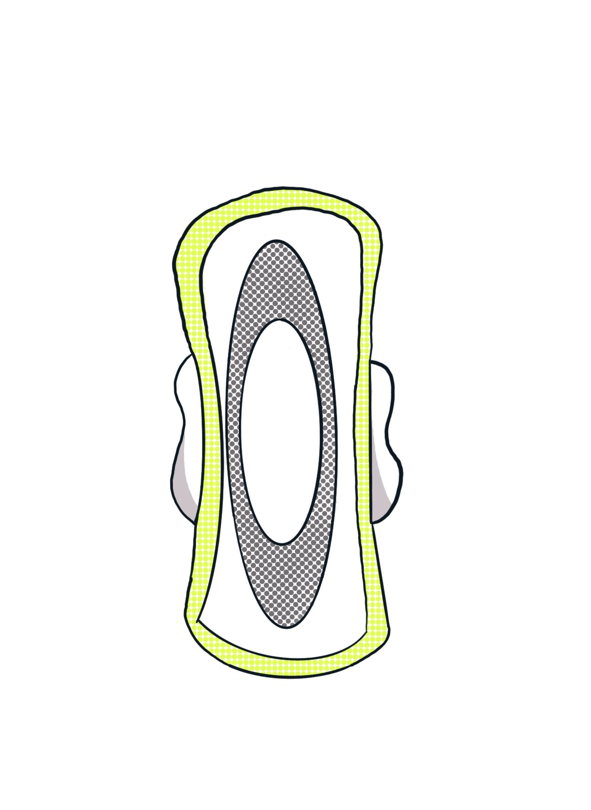

An meine erste Periode erinnre ich mich tatsächlich noch sehr genau, weil sie mir damals half, um den bescheuerten Schwimmunterricht meiner Schule herumzukommen. Das war aber auch das einzig Positive, was sie mir gebracht hat. Wie andere Menschen meiner Familie leide ich an Menstruationsschmerzen und leider auch an besonders starken Blutungen. Zu akzeptieren, dass das nun mal zu meinem Körper dazu gehört ist für mich immer noch nicht einfach. Schuld daran gebe ich auch der Auswahl mir zu Beginn empfohlener Menstruationsprodukte.
Binden
Das wahrscheinlich erste Menstruationsprodukt von den meisten jungen Menschen und auch mir.
Es gibt sie in klein, in groß, mit und ohne „Flügelchen“, mit Duftstoffen, ohne Duftstoffe, als Markenprodukt, oder in der Hausmarke des Drogeriemarkts.
Als Teenagerin fand ich Binden kaufen peinlich. Heute lege ich entspannt meine extra dicken Packungen auf das Fließbank. Sollen die Menschen doch denken was sie wollen. Wahrscheinlich denken sie sich eh nichts.
Aber spätestens bei starkem Blutfluss werden Binden für mich schnell unangenehm. Die Dicke scheuert an meiner Haut und lässt zusammen mit Schweiß einzelne Stellen wund, oder leicht blutig zurück. Gerade bei längeren Perioden ist mein Genitalbereich danach so gereizt, dass selbst Hosen noch ein paar Tag anstrengend werden.
Zudem habe ich das Gefühl mein eigenes Blut manchmal „riechen“ zu können. Da kann die Binde noch so groß „Aloe Vera“, oder „Blünchen“ auf ihrer Packung gedruckt haben.
Was Binden einfach in ihrer Benutzung macht ist ihr hygienisches Wechseln, die einfache Zugänglichkeit (jeder Drogeriemarkt führt sie) und ein schnelles Weitergeben an andere Menschen in Menstruationsnot.
„Klar habe ich Sachen für Regelblutungen dabei! Hier nimm einfach meine Menstruationstasse!“, ist leider keine Option und so habe ich auf Veranstaltungen meistens doch noch Binden im gepäck, egal welche Alternative ich für mich habe.
Auf lange Sicht wird das Nutzen von Binden jedoch teuer. Auch wenn mittlerweile endlich die Steuer auf Menstruationsprodukte gesenkt ist, so kommt dieses nicht bei den Produkten an. Gerade wenn man wie ich einen hohen Verschleiß hat, sich leicht vor seinem eigenen Blut ekelt (auch wenn man das natürlich nicht muss!) und viel Blut aufzufangen hat, geht das ganz schön ins Portemonnaie.
Reguläre Tampons
Früher nie genutzt, weil das Verwenden von Tampons auch bedeutet hätte am Schwimmunterricht teilnehmen zu müssen (habe ich schon erwähnt wie sehr ich den Schwimmunterricht gehasst habe?), waren Tampons später eine gute Alternative für Sport und gegen abgescheuerte Haut im Intimbereich.
Ein flüssigkeitsaufsaugendes Ding in sich zu tragen bedeutet jedoch auch ein stetig ausgetrocknetes Gefühl nach dem Entfernen. Und Sex direkt nach dem herausgezogenen Tampon? Nur über zwei Tuben Gleitgel.
Tampons bedeuteten auf der einen Seite eine große neue Freiheit von Schwimmbadbesuchen, ganz monatlichem Workouts und kurze Röcke, ohne das man die Flügelchen meiner Binde sieht, aber sie sorgten auch dafür, dass ich Bändchen zwischen Schamlippen und der Unterwäsche zu verstecken hatte. Und selbst dann hatte ich häufig immer noch ein „Ist mein Bändchen gerade rausgefallen?“ im Hinterkopf.
Zudem werde ich bis heute nicht damit warm Dinge in mich einzuführen und eigentlich möchte ich es jedes Mal vermeiden. Sowas wird wohl nie die Otpion werden mit der ich persönlich glücklich bin.
Oh und zu den Bändchen: Bin ich die einzige die ihre Tampons wechselt weil sie gerade auf das Bändchen gepinkelt, oder es beim Hinternabwischen mit durchgezoen hat?
Blut riecht. Das ist nun mal so. Aber der Geruch von Tampons die Blut und Vaginalsekret aufgesaugt haben? …
Wie lange habe ich mir gewünscht mehr als diese zwei Möglichkeiten zu haben, doch das schien für eine ganze Weile undenkbar. Ich habe es nicht mal hinterfragt. Für mich wurden Tampons immer wie die Revolution verkauft: Erst wurden Frauen verstoßen, dann gab es Binden, dann wollte man auch mal Swimmen gehen, dann gab es Tampons. Nun sind wir frei. That’s it.
Soft Tampos
Als eine Freundin mir von Soft-Tampons vorschlug war ich irritiert. Es gibt noch mehr als nur Binden und Standard-Tampons?
Warum hat mir niemand etwas darüber erzählt, dass es tatsächlich Weiterentwicklungen in irgendeiner Form gab?
Auch wenn beide Standard-Lösungen nicht meine waren, so kam es mir nicht in den Sinn, dass diese beiden Methoden nicht die besten aller Optionen waren. Ich war der Meinung nun damit leben zu müssen. Aufgescheuerte Haut, oder halt kleine weiße Dinge in mich reinstecken.
Ich begann meine neuen Experimente, doch Soft Tampons bleiben Tampons. Das Einführen ist weiterhin für mich jedes Mal eine kleine Überwindung, aber immerhin muss man kein Bändchen mehr verstecken, kann Sex haben und ich muss sagen, dass es auch für michpersönlich auch bequemer beim Tragen ist.
Leider werden Soft Tampons nicht meine Dauerlösung. Leider sind sie auch deutlich teurer, als reguläre Tampons.
Es bleibt zudem der bitte Nachgeschmack Müll zu produzieren und ich muss nicht nur kleine softe Herzen in mich hineinstecken, sondern auch wieder herausziehen und das ist für mich ohne Bändchen tatsächlich unangenehmer. Nicht weil es schwerer ist, sondern weil man dafür mit zwei Fingern in sich hinein greifen muss. Wem so etwas einfach fällt, für diese Person mögen Tampons und vielleicht auch Soft Tampons eine gute Möglichkeit sein. Ich habe mir vorgenommen erst mal keine Tampons mehr auszuprobieren.
Mehrwegbinden aus Baumwolle
Dennoch war mein Interesse geweckt mich nach weiteren Alternativen umzusehen. Als eine Freundin auf Twitter selbstgenähte Bindebaumwolleinlagen teilte, war ich mehr als interessiert und nähte mein erstes Paar.
Es fühlt sich gut an, das Gefühl an etwas zu arbeiten, dass mein Leben vielleicht etwas leichter machen kann. Menstruationsprodukte waren nie etwas, mit dem ich mich auseinandergesetzt hatte, doch je mehr ich es tue, umso mehr habe ich die Hoffnung doch noch eine Lösung für mich zu finden.
Und diese Lösung fühlt sich wirklich nach Revolution an. Ich bin meine eigene Produzentin und Konsumentin. Nimm das Menstruationsmarkt! Meine Menstruation in meinen Händen. Ich nähe meine eigenen Mittel, suche die Farben und Muster aus und experimentiere.
Ich erfreue mich auch an dem Gedanken, dass kaum noch Müll während meiner Periode entsteht. Einfach auswaschen, aufhängen und wieder benutzen. Doch normale Baumwolle scheint nicht für meine Blutmengen gemacht, oder ich muss sie öfter wechseln als mir lieb ist. Mein Idealprodukt sollte einfacher sein, bzw länger bei großen Blutmengen halten.
Menstruationstasse
Ich weiß nicht mehr wann die Zeit kam, in der ich das erste Mal von einer Menstruationstasse gelesen habe, aber damals gab es sie noch nicht in Drogerien zu kaufen und man musste sie im Internet bestellen.
Auch wenn eine Tasse bedeutet wieder in sich selbst zu greifen, so habe ich dieses Mal das Ganze lieber und vor allem recht lange gemacht. Nicht weil es angenehmer war, ganz im Gegenteil, Soft Tampons oder Reguläre Tampons sind definitiv einfacher zu greifen als das Tassenende meiner Marke, doch das erste Mal in meinem Leben habe ich eine genaue Milliliter Angabe des Blutverlustes meiner Menstruation.
Innerhalb der Tasse ist eine Milliliter Angabe und im Gegensatz zu all den anderen Produkten wird die Blutmenge nicht aufgesogen, sondern gesammelt.
Ich weiß jetzt also ziemlich genau wie viel Blut ich während einer Menstruation verliere und habe sogar meine Zink und Eisen Tabletten danach anpassen können.
Auch fült es sich gut an endlich eine genaue Zahl zu haben. Als ich bei meiner Gynokologien nach meiner Menstruationsblutung gefragt wurde, saß ich nur da mit „Reicht ihnen die Durchschnitssmenge? Ansonsten kann ich Ihnen auch mein Excel-Dokuemnt zeigen.“
Außerdem weiß ich jetzt wirklich mit Sicherheit, dass mein Blutfluss deutlich überproportional ist.
Einziger Nachteil (Abseits vom rein und herausnehmen für mich persönlich) ist, dass es für mich unmöglich ist die Tasse in öffentlichen Orten zu entleeren. Zu unhygienisch empfinde ich die Waschbecken zum Ausspülen der Tassen und zu unhygienisch ist der ganze Ort für mich um entspannt meine Menstruationstasse zu wechseln.
Außerdem möchte ich mein Blut nicht in öffentliche Waschbecken kippen, welche häufig vor allem am Anfang der Toilette für alle zugänglich sind.
Sollte ich je in meinem Leben an einem Film arbeiten, dann wird es aber genau die Szene geben. Toiletten mit vorangestelltem Waschbereich und eine Frau die neben dem Händewaschenden Buisnessmann ihre Menstruationstasche auskippt. Das ist, was ich mir von nun an unter „Normalisierung von Menstruation“ vorstelle.
Perioden-Unterwäsche
Und willkommen zur wahrscheinlich teuersten „Lösung“ im Fangen meines Menstruationsblutes. Mit „Periodproof Underwear“ habe ich endlich die Lösung meiner Probleme gefunden und natürlich musste ich erst mal einen Haufen Geld auf neue Höschen werfen.
Am Anfang war ich unglaublich skeptisch, dass Unterwäsche mein Blut auffangen kann, wo doch meine Baumwolleinlagen es nicht konnten, doch nach dem ersten Tragen war ich überzeugt.
Unterwäsche die absolut normal aussieht und super saubfähig ist? Shut up and take my money.
Für mich bedeutet es auch endlich eine Lösung gefunden zu haben, die präventiv eingesetzt werden kann. Ich kann bereits im Vorfeld auf Verdacht Vorkehrungen treffen und muss mich nicht innerlich bereits damit auseinandersetzen was zu tun ist, wenn meine Periode eintritt.
Und was soll ich sagen… Es hat ja nur 8 Jahre und viel Geld gedauert, bis ich entspannt ein Mal im Monat in eine Lösung hüpfen konnte mit der ich wirklich zufrieden bin. So zufrieden dass ich sie zu Weihnachten verschenke.
Und wer weiß was die nächsten Jahre noch so bringen, denn diese Auswahl kann doch nicht nicht alles sein was die Welt zu bieten hat.
Zurück